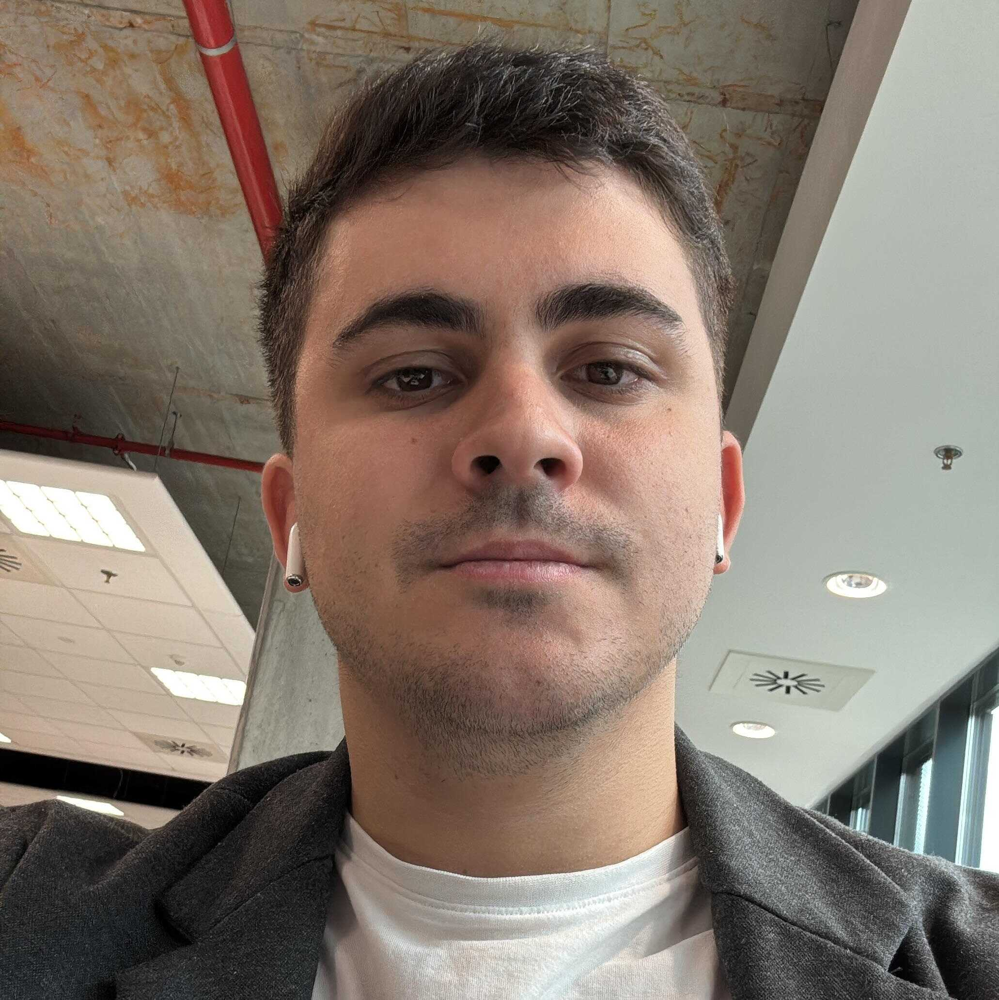

Andrei-Iosif Ioja
MSc student in Artificial Intelligence & Vision · Deep Learning & Data Science

Summary
Yes, I can solve technical problems, and yes, I want to build technologies used by millions. But that isn’t the main reason to work with me (because I'm sure any other applicant has the same type of skills in CV). My biggest strength is follow-through: I don’t stop until I’ve finished my goals. I finish everything I start.
Work Experience
Working Student — Deep Learning & Data Science
Bosch Romania · Hybrid, Cluj-Napoca
2025—Now
Mathematics Tutor for Secondary School and College Students
Self-employed · Hybrid
Oct 2020-Now
Teaching Assistant (Part-time)
Babeș-Bolyai University · Cluj-Napoca
Oct 2024-Now
Software Engineer
Advanced Micro Devices (AMD) · Iași
Feb—Sep 2024
Skills
Programming: Python, C++, C, Java, R
Data & Systems: SQL (SQLite, Oracle), NoSQL (MongoDB, Redis), Spark, Hadoop, BigQuery
Data & Systems: SQL (SQLite, Oracle), NoSQL (MongoDB, Redis), Spark, Hadoop, BigQuery
Projects
Agent-Based Epidemiological Model for School Environments
Dec 2024 - Feb 2025
Projects
Messenger App with Encrypted Communication
Feb - May 2024
Projects
Traffic Object Detection & Tracking
Dec 2023 - Jun 2024
Projects
Escape Room — Deep Learning, Comparative Analysis
Feb - May 2023
Education
Technical University of Cluj-Napoca
Since 2024
Gheorghe Asachi Technical University of Iași
2020—2024
Honors & Awards
ICPC South-Eastern Europe Contest —
2021–2023
South-Eastern European Mathematical Competition —
2021–2022
North Countries Universities Mathematical Competition —
2023, 2025
Additional
Languages: Romanian (Native), English (C1 — IELTS 8), German (A2)